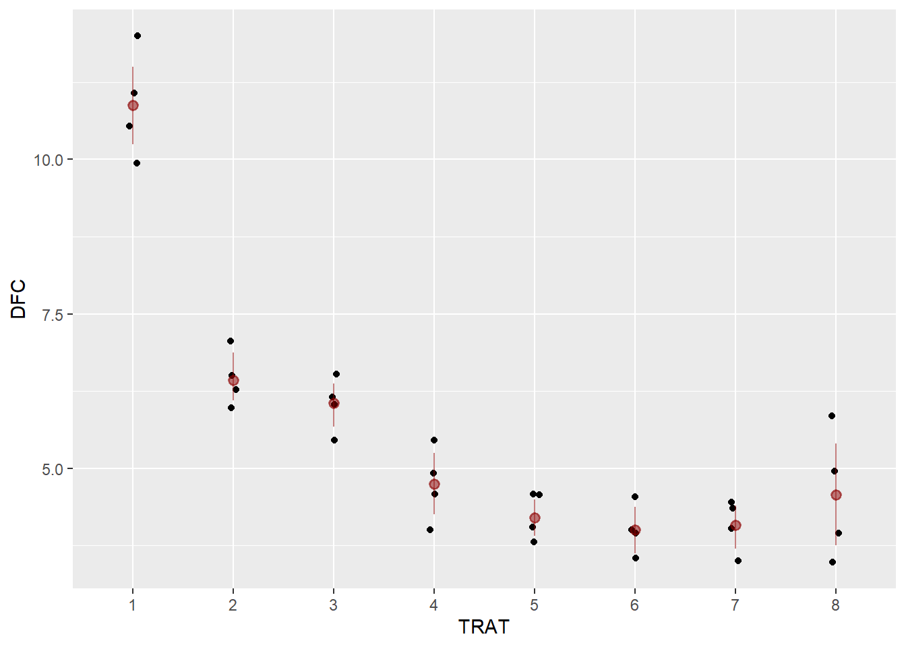
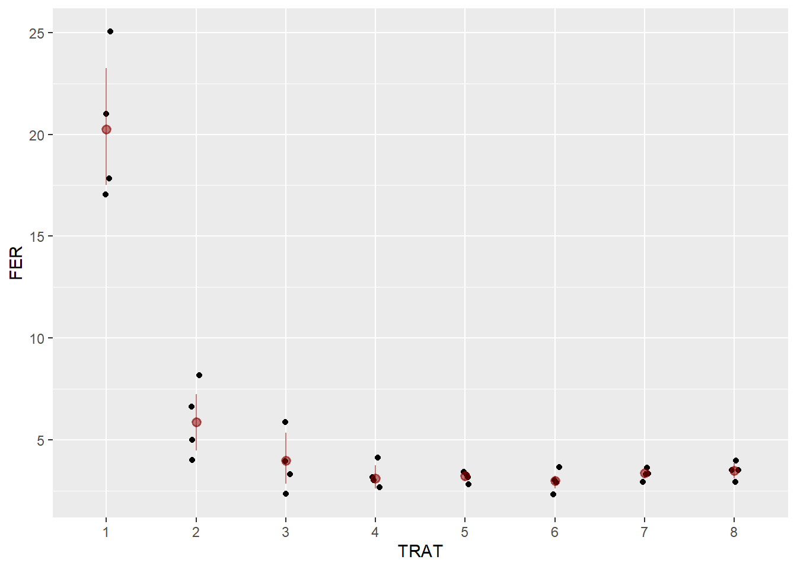
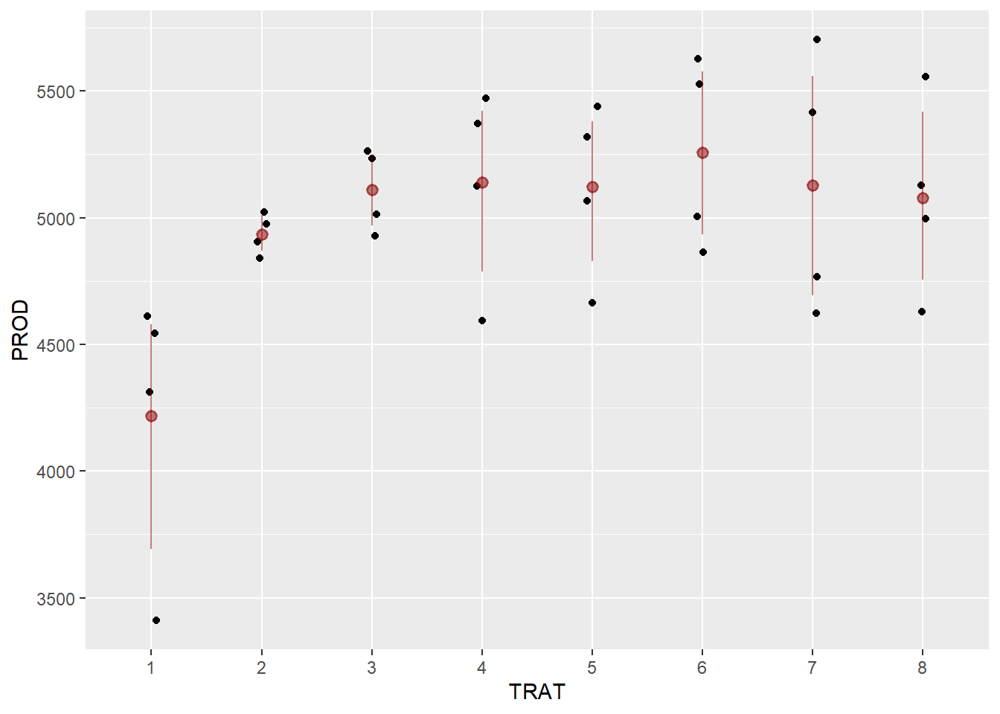
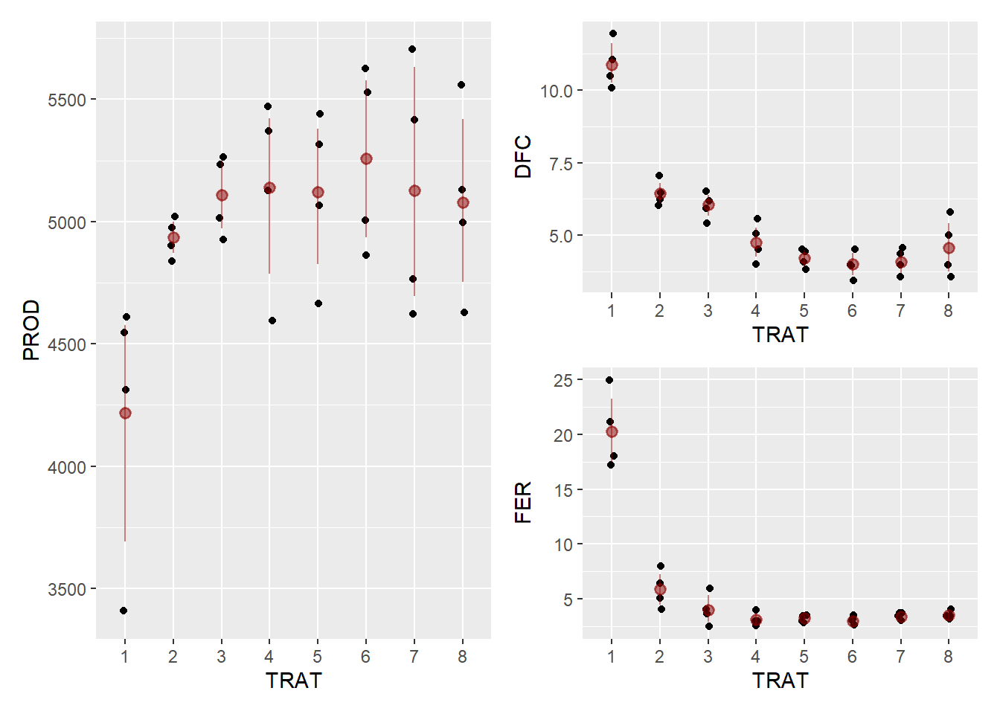
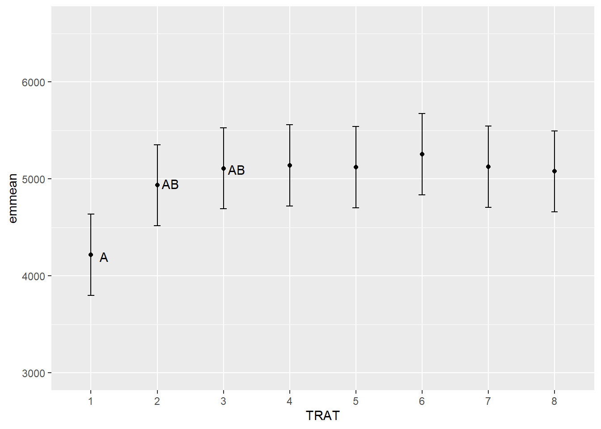
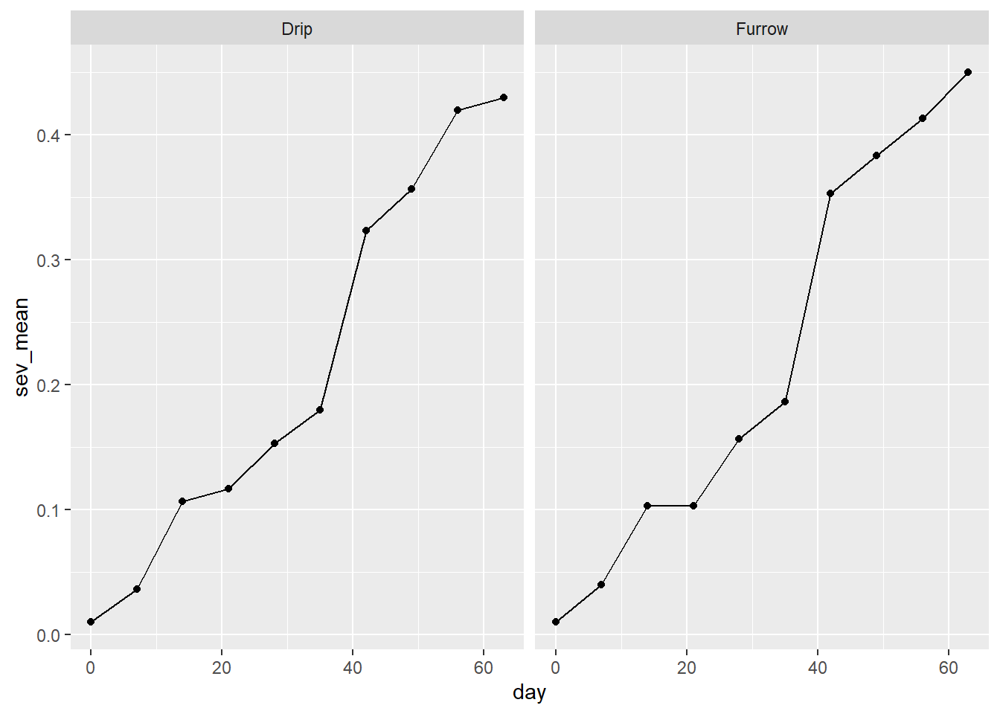
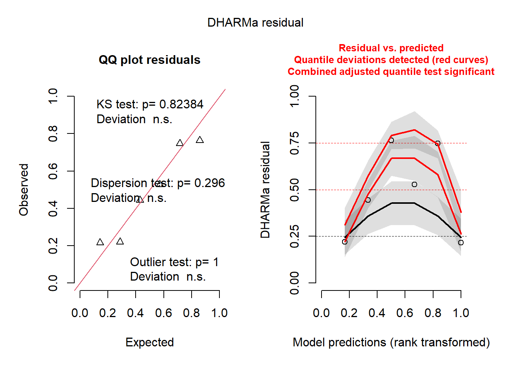

library(gsheet)
library(tidyverse)
library(patchwork)
library(performance)
library(DHARMa)
library(emmeans)
library(multcomp)
library(multcompView)
library(MASS)
library(epifitter)Aula 8 - Estatística inferencial e Curva de progresso da doença
Aula 8
Carregando os pacotes
Importando dados
soja <- gsheet2tbl("https://docs.google.com/spreadsheets/d/1bq2N19DcZdtax2fQW9OHSGMR0X2__Z9T/edit#gid=866852711")
Os dados são referentes a um experimento de soja em campo, conduzido em blocos casualizados, onde o efeito de diferentes fungicidas (coluna “TRAT”, 1 nível, 8 fatores) foi avaliado sobre as doenças de final de ciclo (DFC), a severidade da ferrugem (FER) e a produtividade (PROD).
Como os dados da coluna TRAT e BLOCO são do tipo numérico, é preciso transformá-los para fator.
soja$TRAT <- as.factor(soja$TRAT)
soja$BLOCO <- as.factor(soja$BLOCO)
#ou#
soja <- soja %>%
mutate(TRAT = as.factor(TRAT),
BLOCO = as.factor(BLOCO))glimpse(soja)Rows: 32
Columns: 5
$ TRAT <fct> 1, 1, 1, 1, 2, 2, 2, 2, 3, 3, 3, 3, 4, 4, 4, 4, 5, 5, 5, 5, 6, 6…
$ BLOCO <fct> 1, 2, 3, 4, 1, 2, 3, 4, 1, 2, 3, 4, 1, 2, 3, 4, 1, 2, 3, 4, 1, 2…
$ DFC <dbl> 10.0, 10.5, 12.0, 11.0, 6.2, 6.0, 7.0, 6.5, 6.0, 6.2, 6.5, 5.5, …
$ FER <dbl> 17.0, 21.0, 25.0, 18.0, 6.5, 4.0, 8.0, 5.0, 6.0, 3.5, 2.5, 4.0, …
$ PROD <dbl> 4611, 4312, 4545, 3409, 5023, 4839, 4903, 4975, 5235, 5014, 5263…Estatística Descritiva - Visualização gráfica
Para visualização dos dados das variáveis dependentes (DFC, FER e PROD), serão construídos gráficos de pontos (ggplot: geom_jitter) acrescido do intervalo de confiança.
Para a apresentação do intervalo de confiança, será utilizada a função stat_summary (fun.data), com o argumento "mean_cl_boot".
DFC
DFC <- soja %>%
ggplot(aes(TRAT, DFC))+
geom_jitter(width = 0.05)+
stat_summary (fun.data = "mean_cl_boot", color = "darkred", alpha = 0.5)
DFC
FER
FER <- soja %>%
ggplot(aes(TRAT, FER))+
geom_jitter(width = 0.05)+
stat_summary (fun.data = "mean_cl_boot", color = "darkred", alpha = 0.5)
FER
PROD
PROD <- soja %>%
ggplot(aes(TRAT, PROD))+
geom_jitter(width = 0.05)+
stat_summary (fun.data = "mean_cl_boot", color = "darkred", alpha = 0.5)
PROD
DFC+FER+PROD
Para combinar os gráficos em uma única figura, utiliza-se o pacote patchwork:
(PROD + DFC / FER)
Estatística Inferencial
DFC
ANOVA
Para realizar a análise de variância é preciso construir um modelo, nesse caso, um modelo linear (função lm), considerando TRAT e BLOCO como fatores fixos.
aov_dfc <- lm (DFC ~ TRAT + BLOCO,
data = soja)
anova(aov_dfc)Analysis of Variance Table
Response: DFC
Df Sum Sq Mean Sq F value Pr(>F)
TRAT 7 149.299 21.3284 51.5490 8.218e-12 ***
BLOCO 3 0.461 0.1537 0.3716 0.7743
Residuals 21 8.689 0.4138
---
Signif. codes: 0 '***' 0.001 '**' 0.01 '*' 0.05 '.' 0.1 ' ' 1
Para o fator fixo, TRAT, há efeito significativo, logo há algum tratamento que difere dos demais. Para o fator BLOCO, não houve efeito, logo, não há diferença significativa entre eles.
Pressuposições da ANOVA
A avaliação das pressuposições da ANOVA será realizada com as funções check_normality e check_heteroscedasticity (pacote Performance).
check_normality(aov_dfc)OK: residuals appear as normally distributed (p = 0.978).check_heteroscedasticity(aov_dfc)OK: Error variance appears to be homoscedastic (p = 0.532).Os testes mostram que os resíduos são normalmente distribuídos e que há homogeneidade de variâncias entre os grupos. Assim, é possível proceder a comparação de médias.
Comparação de médias
Para comparação de médias o modelo gerado acima será aplicado à função emmeans para criação de um novo objeto. Essa função estima uma média com base no modelo, logo algumas vezes pode não ser igual a média aritmética.
medias_dfc <- emmeans(aov_dfc, ~TRAT)
medias_dfc TRAT emmean SE df lower.CL upper.CL
1 10.88 0.322 21 10.21 11.54
2 6.42 0.322 21 5.76 7.09
3 6.05 0.322 21 5.38 6.72
4 4.75 0.322 21 4.08 5.42
5 4.20 0.322 21 3.53 4.87
6 4.00 0.322 21 3.33 4.67
7 4.08 0.322 21 3.41 4.74
8 4.58 0.322 21 3.91 5.24
Results are averaged over the levels of: BLOCO
Confidence level used: 0.95 Em seguida, o objeto criado será argumento das funções pwpm (emmeans) e cld (multcomp), que permitem visualização da comparação de médias.
pwpm (medias_dfc) 1 2 3 4 5 6 7 8
1 [10.87] <.0001 <.0001 <.0001 <.0001 <.0001 <.0001 <.0001
2 4.450 [ 6.42] 0.9896 0.0249 0.0017 0.0006 0.0009 0.0107
3 4.825 0.375 [ 6.05] 0.1329 0.0107 0.0040 0.0058 0.0628
4 6.125 1.675 1.300 [ 4.75] 0.9202 0.7173 0.8072 0.9999
5 6.675 2.225 1.850 0.550 [ 4.20] 0.9998 1.0000 0.9896
6 6.875 2.425 2.050 0.750 0.200 [ 4.00] 1.0000 0.9020
7 6.800 2.350 1.975 0.675 0.125 -0.075 [ 4.07] 0.9499
8 6.300 1.850 1.475 0.175 -0.375 -0.575 -0.500 [ 4.57]
Row and column labels: TRAT
Upper triangle: P values adjust = "tukey"
Diagonal: [Estimates] (emmean)
Lower triangle: Comparisons (estimate) earlier vs. laterNa função pwpm, há três informações úteis. Na diagonal, é apresentado o valor médio estimado para cada tratamento. Acima da diagonal, são plotados os valores de probabilidade, relacionados ao teste de Tukey, referentes às comparações múltiplas entre tratamentos. Abaixo da diagonal, há a diferença de valores médios entre os tratamentos.
cld (medias_dfc, Letters = LETTERS) TRAT emmean SE df lower.CL upper.CL .group
6 4.00 0.322 21 3.33 4.67 A
7 4.08 0.322 21 3.41 4.74 A
5 4.20 0.322 21 3.53 4.87 A
8 4.58 0.322 21 3.91 5.24 AB
4 4.75 0.322 21 4.08 5.42 AB
3 6.05 0.322 21 5.38 6.72 BC
2 6.42 0.322 21 5.76 7.09 C
1 10.88 0.322 21 10.21 11.54 D
Results are averaged over the levels of: BLOCO
Confidence level used: 0.95
P value adjustment: tukey method for comparing a family of 8 estimates
significance level used: alpha = 0.05
NOTE: If two or more means share the same grouping symbol,
then we cannot show them to be different.
But we also did not show them to be the same. A função cld apresenta o resultado do teste de Tukey, com as letras representando os agrupamentos.
FER
ANOVA
Similar ao já feito para a variável DFC, será agora conduzido para a variável FER.
aov_fer <- lm (FER ~ TRAT + BLOCO,
data = soja)
anova(aov_fer)Analysis of Variance Table
Response: FER
Df Sum Sq Mean Sq F value Pr(>F)
TRAT 7 978.87 139.838 55.1717 4.218e-12 ***
BLOCO 3 3.84 1.279 0.5045 0.6834
Residuals 21 53.23 2.535
---
Signif. codes: 0 '***' 0.001 '**' 0.01 '*' 0.05 '.' 0.1 ' ' 1Para o fator fixo TRAT, há efeito significativo, logo há algum tratamento que difere dos demais. Para o fator BLOCO, não houve efeito já que não há diferença significativa entre eles.
Pressuposições da ANOVA
check_normality(aov_fer) Warning: Non-normality of residuals detected (p = 0.008).check_heteroscedasticity(aov_fer)Warning: Heteroscedasticity (non-constant error variance) detected (p < .001).Os testes demonstram que os dados não satisfazem as pressuposições da ANOVA, logo será preciso adotar uma alternativa para análise dos dados, como por exemplo a transformação por raiz quadrada.
Transformação - Raiz quadrada
aov_fer1 <- lm (sqrt(FER) ~ TRAT + BLOCO,
data = soja)
anova(aov_fer1)Analysis of Variance Table
Response: sqrt(FER)
Df Sum Sq Mean Sq F value Pr(>F)
TRAT 7 24.5179 3.5026 56.4870 3.345e-12 ***
BLOCO 3 0.1495 0.0498 0.8039 0.5057
Residuals 21 1.3021 0.0620
---
Signif. codes: 0 '***' 0.001 '**' 0.01 '*' 0.05 '.' 0.1 ' ' 1Para os dados transformados pela raiz quadrada, o fator fixo TRAT continua possuindo efeito significativo, logo há algum tratamento que difere dos demais. Para o fator BLOCO, não houve efeito já que não há diferença significativa entre eles.
Pressuposições da ANOVA
check_normality(aov_fer1)OK: residuals appear as normally distributed (p = 0.104).check_heteroscedasticity(aov_fer1)Warning: Heteroscedasticity (non-constant error variance) detected (p < .001).A transformação por raiz quadrada foi suficiente para normalizar os valores do resíduo, no entanto, ainda há heterocedasticidade. Assim, uma outra transformação será testada: transformação de Box-Cox.
Transformação - Box-Cox
b <- boxcox(lm(soja$FER ~ 1))
lambda <- b$x [which.max(b$y)]
lambda[1] -1.555556soja$FER2 <-(soja$FER ^ lambda - 1) / lambdaNovo modelo - Após transformação
aov_fer2 <- lm (FER2 ~ TRAT + BLOCO,
data = soja)
anova(aov_fer2)Analysis of Variance Table
Response: FER2
Df Sum Sq Mean Sq F value Pr(>F)
TRAT 7 0.041641 0.0059488 12.9020 2.436e-06 ***
BLOCO 3 0.005895 0.0019649 4.2616 0.01687 *
Residuals 21 0.009683 0.0004611
---
Signif. codes: 0 '***' 0.001 '**' 0.01 '*' 0.05 '.' 0.1 ' ' 1Para os dados transformados por Box-Cox, o fator fixo TRAT continua possuindo efeito significativo, logo há algum tratamento que difere dos demais. Para o fator BLOCO, não houve efeito já que não há diferença significativa entre eles.
Pressuposições da ANOVA
check_normality(aov_fer2) OK: residuals appear as normally distributed (p = 0.787).check_heteroscedasticity(aov_fer2)OK: Error variance appears to be homoscedastic (p = 0.872).Os testes demonstram que a transformação de Box-Cox foi suficiente para conferir normalidade aos resíduos e homogeneidade de variância entre os grupos.
Comparação de médias
Com os dados transformados por Box-Cox, será feita a comparação de médias como já descrito anteriormente.
medias_fer2 <- emmeans(aov_fer2, ~TRAT)
medias_fer2 TRAT emmean SE df lower.CL upper.CL
1 0.637 0.0107 21 0.614 0.659
2 0.596 0.0107 21 0.574 0.618
3 0.553 0.0107 21 0.530 0.575
4 0.527 0.0107 21 0.505 0.550
5 0.539 0.0107 21 0.517 0.561
6 0.523 0.0107 21 0.501 0.545
7 0.545 0.0107 21 0.523 0.567
8 0.549 0.0107 21 0.527 0.572
Results are averaged over the levels of: BLOCO
Confidence level used: 0.95 pwpm (medias_fer2) 1 2 3 4 5 6 7 8
1 [0.637] 0.1857 0.0004 <.0001 <.0001 <.0001 0.0001 0.0002
2 0.04058 [0.596] 0.1358 0.0039 0.0208 0.0020 0.0497 0.0880
3 0.08380 0.04322 [0.553] 0.7032 0.9807 0.5313 0.9995 1.0000
4 0.10920 0.06862 0.02540 [0.527] 0.9938 1.0000 0.9339 0.8261
5 0.09775 0.05717 0.01395 -0.01145 [0.539] 0.9629 0.9999 0.9964
6 0.11349 0.07292 0.02970 0.00429 0.01575 [0.523] 0.8261 0.6703
7 0.09154 0.05097 0.00775 -0.01766 -0.00620 -0.02195 [0.545] 1.0000
8 0.08725 0.04667 0.00345 -0.02195 -0.01050 -0.02624 -0.00429 [0.549]
Row and column labels: TRAT
Upper triangle: P values adjust = "tukey"
Diagonal: [Estimates] (emmean)
Lower triangle: Comparisons (estimate) earlier vs. latercld (medias_fer2, Letters = LETTERS) TRAT emmean SE df lower.CL upper.CL .group
6 0.523 0.0107 21 0.501 0.545 A
4 0.527 0.0107 21 0.505 0.550 A
5 0.539 0.0107 21 0.517 0.561 A
7 0.545 0.0107 21 0.523 0.567 A
8 0.549 0.0107 21 0.527 0.572 AB
3 0.553 0.0107 21 0.530 0.575 AB
2 0.596 0.0107 21 0.574 0.618 BC
1 0.637 0.0107 21 0.614 0.659 C
Results are averaged over the levels of: BLOCO
Confidence level used: 0.95
P value adjustment: tukey method for comparing a family of 8 estimates
significance level used: alpha = 0.05
NOTE: If two or more means share the same grouping symbol,
then we cannot show them to be different.
But we also did not show them to be the same. Pelo fato de ter sido utilizada a transformação de Box-Cox, os valores apresentados no resultado acima são da transformação e para apresentação em uma tabela seria preciso obter os originais.
PROD
ANOVA
Similar ao já feito para a variável DFC, será agora conduzido para a variável PROD.
aov_prod <- lm(PROD ~ TRAT + BLOCO,
data = soja)
anova(aov_prod)Analysis of Variance Table
Response: PROD
Df Sum Sq Mean Sq F value Pr(>F)
TRAT 7 2993906 427701 2.6367 0.04021 *
BLOCO 3 105665 35222 0.2171 0.88340
Residuals 21 3406431 162211
---
Signif. codes: 0 '***' 0.001 '**' 0.01 '*' 0.05 '.' 0.1 ' ' 1
Para o fator fixo TRAT, há efeito significativo, logo há algum tratamento que difere dos demais. Para o fator BLOCO, não houve efeito já que não há diferença significativa entre eles.
Pressuposições da ANOVA
check_normality(aov_prod)OK: residuals appear as normally distributed (p = 0.542).check_heteroscedasticity(aov_prod)OK: Error variance appears to be homoscedastic (p = 0.215).Os testes mostram que os resíduos são normalmente distribuídos e que há homogeneidade de variâncias entre os grupos. Assim, é possível proceder a comparação de médias.
Comparação de médias
medias_prod <- emmeans(aov_prod, ~ TRAT)
medias_prod TRAT emmean SE df lower.CL upper.CL
1 4219 201 21 3800 4638
2 4935 201 21 4516 5354
3 5110 201 21 4691 5529
4 5140 201 21 4721 5559
5 5122 201 21 4703 5541
6 5256 201 21 4837 5675
7 5128 201 21 4709 5546
8 5078 201 21 4659 5497
Results are averaged over the levels of: BLOCO
Confidence level used: 0.95 df_prod_grupo <- cld (medias_prod, Letters = LETTERS)
df_prod_grupo TRAT emmean SE df lower.CL upper.CL .group
1 4219 201 21 3800 4638 A
2 4935 201 21 4516 5354 AB
8 5078 201 21 4659 5497 AB
3 5110 201 21 4691 5529 AB
5 5122 201 21 4703 5541 AB
7 5128 201 21 4709 5546 AB
4 5140 201 21 4721 5559 AB
6 5256 201 21 4837 5675 B
Results are averaged over the levels of: BLOCO
Confidence level used: 0.95
P value adjustment: tukey method for comparing a family of 8 estimates
significance level used: alpha = 0.05
NOTE: If two or more means share the same grouping symbol,
then we cannot show them to be different.
But we also did not show them to be the same. Gráfico com médias e intervalo de confiança, uma maneira visual de apresentar os resultados.
df_prod <- data.frame(medias_prod)
df_prod %>%
ggplot(aes(TRAT, emmean))+
geom_point()+
ylim (3000, 6600)+
geom_errorbar(aes(min = lower.CL,
max = upper.CL),
width = 0.1)+
annotate(geom = "text",
x = 1.2,
y = 4200,
label = "A")+
annotate(geom = "text",
x = 2.2,
y = 4950,
label = "AB")+
annotate(geom = "text",
x = 3.2,
y = 5100,
label = "AB")
A anotação das letras, deve ser feita manualmente com a função annotate.
Exportando os dados
Também é possível exportar a tabela de comparação de médias com a função write_xlsx (writexl).
knitr::kable(df_prod_grupo %>%
dplyr::select(TRAT, emmean, .group))| TRAT | emmean | .group | |
|---|---|---|---|
| 1 | 1 | 4219.25 | A |
| 2 | 2 | 4935.00 | AB |
| 8 | 8 | 5078.25 | AB |
| 3 | 3 | 5110.00 | AB |
| 5 | 5 | 5122.00 | AB |
| 7 | 7 | 5127.50 | AB |
| 4 | 4 | 5140.25 | AB |
| 6 | 6 | 5256.25 | B |
library(writexl)
write_xlsx(df_prod, "df.xlsx")Curva de progresso da doença
Importando os dados
Para construção de uma curva de progresso da doença usaremos como exemplo um conjunto de dados que descreve diferentes métodos de irrigação (variável independente, um fator, 2 níveis) e seu efeito sobre a severidade (variável dependente) ao longo dos dias.
curve <- gsheet2tbl("https://docs.google.com/spreadsheets/d/1bq2N19DcZdtax2fQW9OHSGMR0X2__Z9T/edit#gid=1807247585")
curve$severity2 <- (curve$severity*100)Como os dados de severidade são apresentados em valores decimais, é possível colocá-los em porcentagem fazendo multiplicação por 100.
Para construir a curva, primeiro é preciso agrupar os dados (group_by) em função do método de irrigação e do dia. Em seguida, é calculada a média em função das mesmas variáveis (dia e irrigação) com a função summarise(sev_mean = mean(sev_X)).
curve2 <- curve %>%
group_by(Irrigation, day) %>%
summarise(sev_mean = mean(severity))
curve2# A tibble: 20 × 3
# Groups: Irrigation [2]
Irrigation day sev_mean
<chr> <dbl> <dbl>
1 Drip 0 0.01
2 Drip 7 0.0367
3 Drip 14 0.107
4 Drip 21 0.117
5 Drip 28 0.153
6 Drip 35 0.18
7 Drip 42 0.323
8 Drip 49 0.357
9 Drip 56 0.42
10 Drip 63 0.43
11 Furrow 0 0.01
12 Furrow 7 0.04
13 Furrow 14 0.103
14 Furrow 21 0.103
15 Furrow 28 0.157
16 Furrow 35 0.187
17 Furrow 42 0.353
18 Furrow 49 0.383
19 Furrow 56 0.413
20 Furrow 63 0.45 Visualização gráfica
Para conhecer o comportamento da severidade ao longo do tempo, será construído um gráfico de pontos (geom_point) e linhas (geom_line), diferenciando os tratamentos (“Irrigation”) pela cor:
curve2 %>%
ggplot(aes(day, sev_mean, colour = Irrigation))+
geom_point()+
geom_line()
Ou, uma figura com dois gráficos. Um para cada nível do fator “Irrigation”:
curve2 %>%
ggplot(aes(day, sev_mean))+
geom_point()+
geom_line()+
facet_wrap(~Irrigation)
Cálculo da área abaixo da curva de progresso da doença
Para o cálculo da área abaixo da curva de progresso da doença (AACPD, ou “area under the disease progress curve”, AUDPC), será criado um novo dataframe. Para isso, será feito o agrupamento (group_by) das variáveis em função do tratamento (”Irrigation”) e das repetições (“rep”). Em seguida, será utilizada a função summarise para o cálculo da AACPD (função AUDPC, pacote epifitter).
curve3 <- curve %>%
group_by(Irrigation, rep) %>%
summarise(aacpd = AUDPC(day, severity))
curve3# A tibble: 6 × 3
# Groups: Irrigation [2]
Irrigation rep aacpd
<chr> <dbl> <dbl>
1 Drip 1 13.0
2 Drip 2 13.9
3 Drip 3 13.3
4 Furrow 1 13.5
5 Furrow 2 14.1
6 Furrow 3 13.7ANOVA
Antes de realizar análise de variância é preciso estabelece um modelo, o que será com os valores de AACPD e a função (lm):
m_curve <- lm(aacpd ~ Irrigation+factor(rep),
data = curve3)Avaliação das pressuposições
Com funções do pacote Performance:
check_normality(m_curve)OK: residuals appear as normally distributed (p = 0.380).check_heteroscedasticity(m_curve)OK: Error variance appears to be homoscedastic (p = 0.704).Com o pacote DHARMa:
plot(simulateResiduals(m_curve))
Com o teste de Shapiro-Wilk (shapiro.test) e o teste de Bartlett (bartlett.test):
shapiro.test(m_curve$residuals)
Shapiro-Wilk normality test
data: m_curve$residuals
W = 0.90104, p-value = 0.3801bartlett.test (aacpd ~ Irrigation,
data = curve3)
Bartlett test of homogeneity of variances
data: aacpd by Irrigation
Bartlett's K-squared = 0.46162, df = 1, p-value = 0.4969Ambas as metodologias demonstram que os dados seguem distribuição normal e possuem homocedasticidade, logo é possível proceder análise de variância.
ANOVA
anova(m_curve)Analysis of Variance Table
Response: aacpd
Df Sum Sq Mean Sq F value Pr(>F)
Irrigation 1 0.23602 0.236017 10.605 0.08275 .
factor(rep) 2 0.61291 0.306454 13.771 0.06770 .
Residuals 2 0.04451 0.022254
---
Signif. codes: 0 '***' 0.001 '**' 0.01 '*' 0.05 '.' 0.1 ' ' 1A ANOVA mostra que não há diferença entre as áreas.
agricolae::cv.model(m_curve)[1] 1.097572O que poderia ser explicado pelo coeficiente de variação do experimento, que foi muito baixo (CV = 1.09 %).